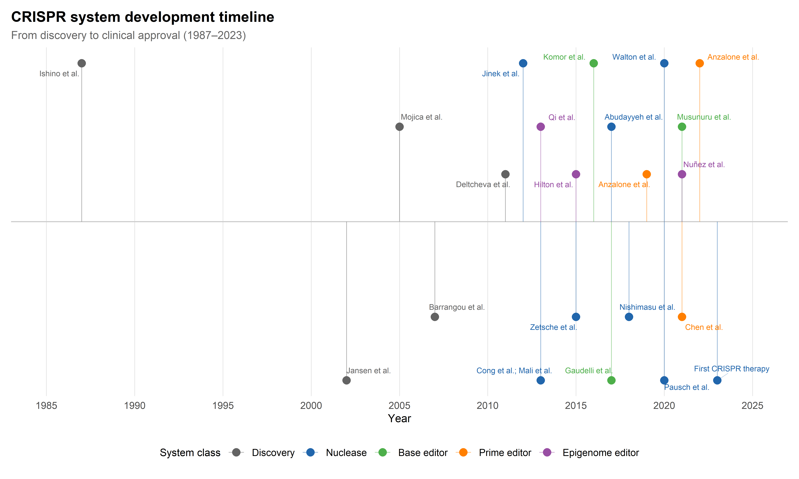

1 CRISPR Architectures: From Cas9 to Epigenome Editors
1.1 Introduction: a molecular toolkit in rapid expansion
The transformation of CRISPR from an obscure bacterial immune mechanism into the dominant platform for genome engineering constitutes one of the most rapid translations in the history of molecular biology. The acronym — clustered regularly interspaced short palindromic repeats — was formalised by Jansen and colleagues in 2002 (Jansen et al., 2002), but the underlying repeat structures had been observed as early as 1987 in Escherichia coli (Ishino et al., 1987). The biological function of these arrays as an adaptive immune system against phage infection was proposed by Mojica and collaborators in 2005 (Mojica et al., 2005) and experimentally confirmed by Barrangou et al. in 2007 (Barrangou et al., 2007). The decisive conceptual leap came with the demonstration by Jinek et al. in 2012 that the Cas9 protein from Streptococcus pyogenes, guided by a dual RNA structure that could be simplified into a single guide RNA (sgRNA), was capable of programmable DNA cleavage in vitro (Jinek et al., 2012). Within months, three groups independently demonstrated that this system could be repurposed for genome editing in human cells (Cho et al., 2013; Cong et al., 2013; Mali et al., 2013), launching a technological trajectory that has since yielded an entire family of editing tools, each addressing specific limitations of the original system.
This chapter provides a systematic review of CRISPR architectures as they stand in early 2026. Its organising thesis is that the diversification of the CRISPR toolkit — from nucleases through base editors, prime editors, and epigenome editors — has been driven by identifiable shortcomings of the canonical SpCas9 double-strand break (DSB) paradigm. Each subsequent innovation represents a trade-off: base editors eliminate DSBs but restrict the types of changes possible; prime editors expand the edit repertoire but at the cost of efficiency; epigenome editors avoid sequence alteration entirely but face questions of durability. Understanding these trade-offs is essential for evaluating both the therapeutic applications discussed in Part II and the governance challenges analysed in Part III.
The chapter closes with a Sociotechnical Interlude examining CRISPR as a platform technology — a concept that illuminates how the material constraints of each architecture shape not only what is technically feasible but what is imagined as achievable by clinicians, regulators, funders, and publics.
1.2 The canonical system: SpCas9 and the double-strand break paradigm
1.2.1 Structural biology of the Cas9–sgRNA–DNA ternary complex
Streptococcus pyogenes Cas9 (SpCas9) is a large (~1,368 amino acids, ~160 kDa) bi-lobed protein consisting of a recognition (REC) lobe and a nuclease (NUC) lobe. High-resolution crystal structures of the ternary complex — Cas9 bound to its sgRNA and a complementary DNA target — revealed that the REC lobe undergoes a substantial conformational change upon sgRNA loading, creating a positively charged channel that accommodates the guide–target heteroduplex (Nishimasu et al., 2014). The NUC lobe contains two catalytic domains: HNH, which cleaves the strand complementary to the guide RNA, and RuvC, which cleaves the non-complementary strand. Both domains must be catalytically active to generate the blunt-ended DSB that is the hallmark of canonical CRISPR editing (Jinek et al., 2012).
The sgRNA itself is an engineered fusion of two naturally occurring RNA molecules: the CRISPR RNA (crRNA), whose 5’ end contains the ~20-nucleotide spacer sequence that specifies the target, and the trans-activating crRNA (tracrRNA), which scaffolds the interaction with Cas9 (Deltcheva et al., 2011). The simplification of this dual RNA into a single chimeric molecule was a decisive engineering step that dramatically increased the system’s usability (Jinek et al., 2012).
1.2.2 The PAM constraint and its consequences for target space
Target recognition by SpCas9 requires the presence of a short motif immediately downstream (3’) of the target sequence on the non-complementary strand: the protospacer adjacent motif (PAM). For SpCas9, this motif is 5’-NGG-3’, where N is any nucleotide (Cong et al., 2013; Jinek et al., 2012). The PAM serves a dual function: it is essential for initial DNA interrogation by Cas9 and acts as a self vs. non-self discrimination mechanism in the native bacterial immune context.
From an engineering perspective, the PAM requirement constrains the targetable sequence space. In the human genome, the 5’-NGG-3’ motif occurs on average every 8 base pairs, which provides reasonable but not universal coverage (Hsu et al., 2013). For applications requiring precise positioning — such as base editing, where the target nucleotide must fall within a narrow editing window relative to the PAM — this constraint becomes a significant bottleneck. As discussed in Section 1.3, the drive to relax PAM requirements has been a major axis of Cas protein engineering.
1.2.3 DSB repair pathways: NHEJ vs. HDR and the stochastic editing problem
The therapeutic utility and the principal limitation of canonical CRISPR editing both arise from the same event: the DSB. Mammalian cells resolve DSBs through two major pathways. Non-homologous end joining (NHEJ) is active throughout the cell cycle and typically produces small insertions or deletions (indels) at the break site. Homology-directed repair (HDR) uses a provided DNA template to introduce precise changes but is largely restricted to the S and G2 phases of the cell cycle and operates at substantially lower efficiency than NHEJ in most therapeutically relevant cell types (Jasin & Rothstein, 2013).
This asymmetry creates what may be termed the stochastic editing problem: when a DSB is introduced with the intention of installing a precise correction via HDR, the competing NHEJ pathway generates an unpredictable mixture of indel products at the same locus. The resulting mosaic of edited alleles complicates both the assessment and the safety of therapeutic interventions. The stochastic editing problem has been the single most powerful motivator for the development of DSB-free editing strategies — base editing and prime editing — discussed in subsequent sections.
1.2.4 Off-target activity: molecular origins and detection methods
Off-target cleavage — the cutting of genomic sites that differ from the intended target by one or more mismatches — is the most prominent safety concern for nuclease-based editing. The molecular basis of off-target activity lies in the tolerance of Cas9 for mismatches between the sgRNA and the DNA target, particularly in the PAM-distal region of the spacer (Hsu et al., 2013). Structural studies have shown that the seed region (approximately the 10–12 nucleotides proximal to the PAM) is essential for target recognition, whilst mismatches at the 5’ end of the spacer are more readily accommodated (Nishimasu et al., 2014).
Multiple experimental methods have been developed to profile off-target activity genome-wide. GUIDE-seq uses the integration of short double-stranded oligonucleotides at DSB sites to map cleavage events with high sensitivity (Tsai et al., 2015). CIRCLE-seq performs in vitro cleavage of circularised genomic DNA followed by sequencing of linearised fragments (Tsai et al., 2017). DISCOVER-seq exploits the recruitment of the DNA damage response factor MRE11 to DSB sites as a marker of Cas9 cleavage in living cells (Wienert et al., 2019). Each method has distinct sensitivity and specificity profiles, and no single assay captures the full spectrum of off-target events. The integration of these experimental approaches with computational prediction — the subject of Chapter 2 — remains an active area of development.
1.3 Beyond Cas9: expanding the nuclease repertoire
1.3.1 Cas12a (Cpf1) and Cas12b: staggered cuts and T-rich PAMs
The first major expansion of the CRISPR nuclease toolkit came with the characterisation of Cas12a (originally designated Cpf1) from Francisella novicida and Acidaminococcus species (Zetsche et al., 2015). Cas12a differs from Cas9 in several respects that carry direct practical consequences. It recognises a T-rich PAM (5’-TTTV-3’), complementing the G-rich PAM of SpCas9 and thereby expanding the targetable genomic space. Its cleavage generates staggered cuts with 5’ overhangs rather than blunt ends, which may favour certain repair outcomes. Crucially, Cas12a processes its own crRNA array, enabling straightforward multiplexed editing from a single transcript — a property that has been exploited in combinatorial genetic screens (Zetsche et al., 2015).
Cas12b (originally C2c1) offers comparable staggered-cut activity with distinct PAM preferences and has been engineered for mammalian cell applications, though its requirement for elevated temperatures in its wild-type form initially limited its utility (Strecker et al., 2019). Engineered thermostable and mesophilic variants have since broadened its applicability.
1.3.2 Cas13: RNA-targeting CRISPR systems
The Cas13 family (Cas13a–d) operates on a fundamentally different principle: these enzymes target single-stranded RNA rather than DNA (Abudayyeh et al., 2017). Upon recognition of a complementary RNA target, Cas13 exhibits collateral cleavage activity — the non-specific degradation of nearby RNA molecules — a property that has been exploited for nucleic acid diagnostics (see Chapter 4) but that complicates its use as a therapeutic RNA knockdown tool. Engineered high-fidelity variants with reduced collateral activity have been reported, and catalytically inactive Cas13 (dCas13) has been repurposed for RNA editing through fusion with ADAR deaminase domains (Cox et al., 2017).
1.3.3 CasX, CasΦ, and compact nucleases: size matters for delivery
A persistent constraint on the clinical translation of CRISPR systems is the cargo capacity of adeno-associated virus (AAV) vectors, the most clinically advanced viral delivery platform. The packaging limit of AAV (~4.7 kb) is insufficient to accommodate the SpCas9 coding sequence (~4.1 kb) together with its sgRNA expression cassette and necessary regulatory elements. This size constraint has motivated the search for compact CRISPR nucleases.
CasX (now designated Cas12e), identified from the candidate phylum Planctomycetes, is substantially smaller (~980 amino acids) and recognises a 5’-TTCN-3’ PAM (Liu et al., 2019). CasΦ (Cas12j), discovered in huge bacteriophages of the Biggiephage clade, is even more compact (~700–800 amino acids) and has been shown to edit mammalian genomes despite its phage origin (Pausch et al., 2020). These compact systems are of particular interest for single-AAV delivery strategies, though their editing efficiencies and specificities in mammalian cells remain under active optimisation.
1.3.4 Engineered PAM-relaxed variants: SpCas9-NG, SpRY, and near-PAMless editing
Rather than mining natural CRISPR diversity, an alternative strategy for expanding target coverage has been the direct engineering of SpCas9 to relax its PAM requirement. SpCas9-NG, developed through structure-guided mutagenesis, recognises a minimal 5’-NG-3’ PAM, approximately doubling the accessible target space (Nishimasu et al., 2018). The subsequent development of SpRY — a variant engineered to accept virtually any PAM sequence (5’-NRN-3’ and, with reduced efficiency, 5’-NYN-3’) — approached the ideal of near-PAMless editing (Walton et al., 2020).
These variants trade PAM stringency for reduced on-target discrimination: a more permissive PAM inherently increases the number of potential off-target sites. The practical consequence is that PAM-relaxed variants demand more rigorous off-target profiling and may benefit disproportionately from the AI-driven specificity prediction tools discussed in Chapter 2.
1.4 Base editing: chemistry without double-strand breaks
1.4.1 Cytosine base editors (CBEs): architecture and deaminase domains
Base editors emerged as a direct response to the stochastic editing problem described in Section 1.2.3. The foundational insight was that a catalytically impaired Cas9 — a nickase (Cas9n, D10A) that cuts only one strand — could be fused to a single-stranded DNA deaminase to catalyse a specific chemical conversion at a defined position within the target, without generating a DSB (Komor et al., 2016).
The first-generation cytosine base editor (BE1) fused rat APOBEC1 cytidine deaminase to catalytically dead Cas9 (dCas9), enabling C→U conversion in the non-edited strand within a narrow activity window approximately 4–8 nucleotides from the PAM-proximal end of the spacer. Uracil is read as thymine during replication, yielding a C·G → T·A conversion. Second- and third-generation CBEs (BE2, BE3) incorporated a uracil glycosylase inhibitor (UGI) to prevent base excision repair from reverting the edit, and used Cas9 nickase to nick the non-edited strand, biasing mismatch repair towards using the edited strand as template (Komor et al., 2016).
Subsequent engineering has produced CBE variants with altered activity windows, reduced bystander editing (unintended conversion of nearby cytosines within the window), and compatibility with diverse Cas proteins, expanding the reach of cytosine base editing across the genome (Rees & Liu, 2018).
1.4.2 Adenine base editors (ABEs): directed evolution of TadA
No naturally occurring adenosine deaminase that acts on single-stranded DNA was known when the base editing concept was first demonstrated. The development of adenine base editors (ABEs), which convert A·T → G·C, therefore required the directed evolution of E. coli tRNA adenosine deaminase (TadA) to accept DNA substrates — a landmark achievement in protein engineering (Gaudelli et al., 2017). After seven rounds of evolution, the resulting TadA* variant was fused to Cas9 nickase to create ABE7.10, which achieves efficient A-to-G conversion with remarkably low rates of indel formation and bystander editing.
ABE8e, a further-evolved variant with enhanced activity across cell types and genomic contexts, has become the standard ABE for therapeutic applications and has been deployed in the first clinical trials of base editing approaches for cardiovascular disease (Richter et al., 2020).
1.4.3 Dual base editors and expanded editing windows
The combination of cytosine and adenine deaminase activities within a single construct — so-called dual base editors — has been achieved, enabling simultaneous C→T and A→G conversions at the same target site. These tools are of particular interest for applications requiring complex multi-nucleotide changes, though the control of relative editing efficiencies at each position within the window remains challenging.
Engineering efforts have also focused on expanding or shifting the editing window relative to the PAM, using circularly permuted Cas9 variants or alternative Cas proteins to position the deaminase domain at different locations relative to the R-loop (Huang et al., 2019). These window-engineering strategies, combined with the PAM-relaxed Cas9 variants discussed in Section 1.3, have substantially increased the fraction of pathogenic single-nucleotide variants that are correctable by base editing.
1.4.4 Bystander editing and purity of outcomes
A persistent limitation of base editors is bystander editing: when multiple target nucleotides (C or A) fall within the editing window, the deaminase domain may convert unintended bases in addition to the desired target. Where therapeutic precision is paramount, bystander edits can introduce unwanted amino acid changes or disrupt regulatory elements.
Strategies to mitigate bystander editing include narrowing the activity window through deaminase engineering, using high-fidelity Cas9 variants that reduce the exposure time of the non-target strand, and computational selection of guides that position only the intended target within the active zone. The latter strategy is a natural application for the AI-based guide design tools discussed in Chapter 2, which can incorporate bystander risk as an objective in multi-criteria optimisation.
1.5 Prime editing: search-and-replace at the genome level
1.5.1 The pegRNA architecture and reverse transcriptase fusion
Prime editing, introduced by Anzalone et al. in 2019, is the most versatile CRISPR editing modality developed to date (Anzalone et al., 2019). It enables all twelve types of point mutation, as well as small insertions and deletions, without requiring either a DSB or a donor DNA template. The system comprises two components: a Cas9 nickase (H840A) fused to an engineered Moloney murine leukaemia virus (M-MLV) reverse transcriptase (RT), and a prime editing guide RNA (pegRNA) that encodes both the target-specifying spacer and a 3’ extension containing a reverse transcriptase template and a primer binding site.
The mechanism proceeds through a defined series of steps. The Cas9 nickase component nicks the PAM-containing strand of the target DNA. The exposed 3’ end of the nicked strand hybridises to the primer binding site of the pegRNA. The RT domain then copies the edit-encoding template into the target locus. Following strand displacement and ligation by endogenous DNA repair, the edit is installed. This mechanism is elegant in its directness: the desired edit is encoded in the pegRNA itself, eliminating the stochasticity inherent in DSB-dependent approaches.
1.5.2 Prime editor generations: PE2, PE3, PE4, PE5max
The development of prime editing has proceeded through a series of system-level optimisations. PE2 incorporated an engineered M-MLV RT with enhanced thermostability and processivity. PE3 added a second sgRNA-directed nick on the non-edited strand to bias mismatch repair towards the edited strand, improving editing efficiency but at the cost of modest increases in indel rates (Anzalone et al., 2019). PE4 and PE5 co-expressed a dominant-negative mismatch repair protein (MLH1dn) to inhibit the endogenous repair pathway that would otherwise revert the edit, yielding substantial efficiency gains across cell types and edit types (Chen et al., 2021).
The most recent generation, PE5max, combines the MLH1dn strategy with optimised nuclear localisation signals, codon optimisation, and an engineered pegRNA architecture (epegRNA) that incorporates a structured RNA motif at the 3’ end to resist exonuclease degradation (Nelson et al., 2022). These cumulative improvements have brought prime editing efficiencies for many edit types into the range required for therapeutic applications, though substantial cell-type variability persists.
1.5.3 Twin prime editing and large-scale genomic insertions
A transformative extension of the prime editing concept is twin prime editing (twinPE), in which two pegRNAs direct the synthesis of complementary DNA flaps on opposite strands, which then recombine to install larger edits than are accessible with standard prime editing (Anzalone et al., 2022). When combined with site-specific recombinases (the PASTE system), twinPE can mediate the programmable insertion of multi-kilobase DNA sequences at endogenous genomic loci — a capability that approaches the functional equivalent of traditional gene therapy but with the precision of CRISPR targeting.
1.5.4 Current efficiency limitations and cell-type dependencies
Despite its conceptual elegance, prime editing efficiency varies substantially across cell types, genomic loci, and edit types. Quiescent cells and post-mitotic tissues present particular challenges, as the mechanism depends on endogenous DNA repair processes whose activity varies with cell-cycle state. Primary human haematopoietic stem cells, a key therapeutic target, have proven difficult to edit efficiently with prime editors, though recent advances in delivery (see Section 1.7) and system optimisation are progressively narrowing this gap.
The prediction of prime editing efficiency — which depends on pegRNA design, target-site sequence context, edit type, and cellular factors — is an area where machine learning models are beginning to contribute meaningfully, as discussed in Chapter 3.
1.6 Epigenome editors: rewriting regulation without altering sequence
1.6.1 dCas9-DNMT3A and targeted DNA methylation
An alternative to modifying the DNA sequence is to alter its epigenetic state — the chemical modifications to DNA and histone proteins that regulate gene expression without changing the underlying nucleotide sequence. The first epigenome editing tools were constructed by fusing catalytically dead Cas9 (dCas9, bearing both D10A and H840A mutations) to effector domains that deposit or remove specific epigenetic marks (Qi et al., 2013).
Fusion of dCas9 to the catalytic domain of DNA methyltransferase 3A (DNMT3A) enables targeted CpG methylation at promoter regions, leading to transcriptional silencing of specific genes (Vojta et al., 2016). This approach has been demonstrated to silence genes implicated in cancer, neurological disorders, and viral infections, and offers the advantage of gene suppression without permanent sequence alteration — in principle, a reversible intervention.
1.6.2 dCas9-p300 and histone acetylation
Conversely, fusion of dCas9 to the catalytic core of the histone acetyltransferase p300 enables targeted acetylation of histone H3 at lysine 27 (H3K27ac), a mark associated with transcriptional activation (Hilton et al., 2015). This system, known as dCas9-p300, has proven effective at activating genes from endogenous promoters, enhancers, and distal regulatory elements, often outperforming earlier CRISPRa approaches based on transcription factor recruitment domains.
1.6.3 CRISPRa and CRISPRi: transcriptional activation and interference
CRISPRa (CRISPR activation) and CRISPRi (CRISPR interference) form the broadest category of epigenome editing tools. CRISPRi, in its simplest form, relies on the steric hindrance of RNA polymerase by dCas9 binding near a transcription start site (Qi et al., 2013). More potent CRISPRi systems fuse dCas9 to transcriptional repressor domains such as KRAB, achieving robust gene silencing through heterochromatin formation (Gilbert et al., 2013).
CRISPRa systems recruit transcriptional activators to target promoters. First-generation systems fused dCas9 to VP64 (four tandem copies of the herpes simplex VP16 activation domain), but these often produced modest activation. The development of synergistic activation mediator (SAM), SunTag, and VPR systems — which recruit multiple activation domains to a single dCas9-bound locus — dramatically increased activation potency (Konermann et al., 2015).
CRISPRa and CRISPRi screens have become indispensable tools for functional genomics, enabling the systematic interrogation of gene function and regulatory element activity on a genome-wide scale. Their therapeutic potential lies in the ability to modulate gene expression without permanent genome alteration — an approach that may be particularly attractive for conditions where gene silencing or activation, rather than correction, is the desired outcome.
1.6.4 Durability of epigenetic edits: transient vs. heritable marks
A key unresolved question for therapeutic epigenome editing is the durability of the installed marks. DNA methylation deposited by dCas9-DNMT3A can, in some contexts, be maintained through cell divisions by the endogenous maintenance methyltransferase DNMT1, leading to stable, heritable silencing. However, the conditions under which this maintenance occurs — and the genomic and cellular contexts in which it fails — remain incompletely understood.
Histone modifications are generally more labile, and CRISPRa/CRISPRi effects are typically transient unless the underlying chromatin state is sufficiently reorganised to create a self-reinforcing epigenetic domain. Recent work combining multiple repressive effectors (KRAB, DNMT3A, and DNMT3L) in a single dCas9 fusion has demonstrated durable silencing lasting months in cell culture and in vivo without continued expression of the editor, a development with significant implications for therapeutic applications requiring long-term gene suppression (Nuñez et al., 2021).
1.7 Delivery systems: getting the editor to the target cell
1.7.3 In vivo vs. ex vivo strategies: clinical trade-offs
The choice between in vivo and ex vivo editing strategies reflects a complex set of trade-offs involving target tissue accessibility, delivery efficiency, safety monitoring, manufacturing scalability, and patient burden. Ex vivo approaches — in which cells are harvested, edited outside the body, and reinfused — enable rigorous quality control of the edited cell product but require myeloablative conditioning (in the case of haematopoietic stem cell therapies) and are inherently autologous, limiting scalability. In vivo approaches avoid these constraints but must contend with the challenges of systemic delivery, immune responses to vector components, and the inability to screen edited cells before they act in the patient.
The current clinical landscape (discussed in detail in Chapter 5) reflects this duality: approved therapies (Casgevy) use ex vivo editing, whilst the most advanced in vivo programmes target the liver, the organ most accessible to LNP delivery.
1.7.4 Tissue tropism and the challenge of systemic delivery
Expanding in vivo CRISPR editing beyond the liver remains one of the field’s most significant technical challenges. The lung, brain, muscle, and kidney are high-priority therapeutic targets for which efficient, specific delivery systems are lacking. Engineered AAV capsids with altered tropism, targeted LNP formulations decorated with tissue-homing ligands, and extracellular vesicle-based delivery systems are all under investigation, but none has yet achieved the combination of efficiency, specificity, and scalability required for clinical translation.
The optimisation of delivery systems now draws on computational approaches — including machine learning models for predicting AAV capsid tropism from sequence and Bayesian optimisation of LNP formulations — as discussed in Chapter 3.
1.8 Sociotechnical Interlude I: CRISPR as a platform technology
The preceding sections have surveyed CRISPR as a collection of molecular tools. A complementary and equally important perspective, however, treats CRISPR as a platform technology — a category of artefact that acquires meaning and value not merely through its intrinsic capabilities but through the networks of actors, institutions, and imaginaries that form around it.
The concept of the boundary object, introduced by Star and Griesemer (Star & Griesemer, 1989), is instructive here. CRISPR functions as a boundary object in the sense that it is recognisable and usable across multiple social worlds — molecular biology, clinical medicine, agriculture, intellectual property law, bioethics, and public discourse — whilst carrying different meanings and serving different purposes in each. For a structural biologist, CRISPR is a protein–RNA–DNA interaction problem. For a clinical haematologist, it is a potential cure for sickle cell disease. For a patent attorney, it is the subject of one of the most consequential intellectual property disputes in biotechnology history. For a disability rights advocate, it is a technology that encodes normative judgements about which bodies are worth “correcting.”
The material constraints reviewed in this chapter — PAM requirements, cargo size limits, efficiency ceilings, off-target risks — are not merely technical parameters. They are boundary conditions that shape the sociotechnical imaginaries (Jasanoff & Kim, 2015) of genome editing: the collectively held visions of desirable futures that orient research priorities, funding decisions, and regulatory responses. When a new CRISPR variant is reported to achieve “near-PAMless” editing or “search-and-replace” capability, these descriptors circulate far beyond the laboratory, entering media narratives and policy discussions where they acquire promissory weight disproportionate to their current technical maturity.
The patent dispute between the Broad Institute and the University of California — which has shaped the commercial development of CRISPR therapeutics since 2014 — further illustrates how the governance of platform technologies is inseparable from their technical development. The resolution of this dispute has influenced which companies can develop which applications, which licensing models prevail, and ultimately which patients gain access to which therapies. Technical and legal architectures co-produce each other: the molecular properties of Cas9, Cas12a, and base editors determine what can be patented, whilst patent regimes determine which systems receive the investment needed for clinical translation (Sherkow, 2017).
This interplay between the technical and the institutional will recur throughout the monograph. The point to register here is methodological: an adequate analysis of CRISPR-AI systems requires attending simultaneously to their molecular mechanisms and their social embeddedness. Neither dimension is reducible to the other.
1.9 Chapter summary
This chapter has mapped the current landscape of CRISPR editing architectures along four dimensions: the canonical DSB-dependent nuclease paradigm (SpCas9 and its expanded family), base editors (CBEs and ABEs), prime editors (PE2 through PE5max), and epigenome editors (CRISPRi, CRISPRa, and targeted methylation/acetylation tools). Figure 1.1 provides a chronological overview of the major developments, and Table 1.1 summarises the key properties and trade-offs of each system class.
The chapter’s central argument — that the diversification of CRISPR tools has been driven by specific limitations of the DSB paradigm, with each innovation trading one set of constraints for another — establishes the technical foundation for the subsequent analysis of AI-driven design and optimisation (Chapter 2, Chapter 3), therapeutic applications (Chapter 4, Chapter 5), and the governance challenges that arise when these tools enter clinical practice and public discourse (Chapter 7, Chapter 8).
Three observations deserve emphasis as the reader moves forward. First, the toolkit is still expanding rapidly: the systems described here represent a snapshot that will require updating as new architectures emerge from metagenomic mining, protein engineering, and directed evolution. Second, delivery remains the rate-limiting step for clinical translation; the most elegant editor is therapeutically irrelevant if it cannot reach the target cell. Third, the framing of CRISPR as a platform technology — a boundary object whose meaning is negotiated differently by molecular biologists, clinicians, regulators, and publics — raises a question that the technical literature tends to suppress: who decides which trade-offs are acceptable, and on behalf of whom?
| Property | SpCas9 nuclease | Base editors (CBE/ABE) | Prime editors (PE5max) | Epigenome editors |
|---|---|---|---|---|
| DNA break type | Double-strand break | Single-strand nick | Single-strand nick | None |
| Edit types | Indels; HDR with template | C→T or A→G transitions | All 12 substitutions; small indels | Gene expression modulation |
| Typical efficiency | 30–80% (indels) | 20–60% (point mutations) | 5–50% (varies by edit) | 2–20× activation/repression |
| Indel byproducts | Predominant product | < 2% (ABE); 1–10% (CBE) | 1–10% | None |
| Off-target risk | DSB at mismatch-tolerant sites | Guide-dependent + guide-independent deamination | Low (nick-dependent) | Low (binding-dependent) |
| Cargo size (kb) | ~4.1 (Cas9 alone) | ~5.2 (Cas9n + deaminase) | ~6.4 (Cas9n + RT) | ~5.0–6.5 (dCas9 + effector) |
| AAV compatibility | Dual AAV required | Dual AAV required | Dual AAV required | Dual AAV required |
| Key clinical milestone | Casgevy (2023) | VERVE-101 Phase I (2022) | Preclinical | Preclinical |